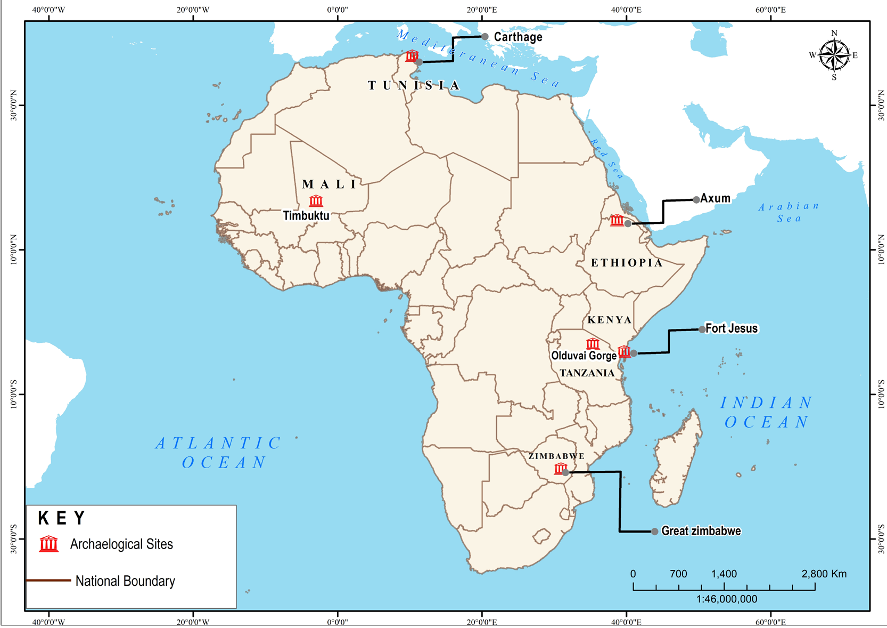

excavation is used to obtain archaeological materials. Excavation refers to systematic digging and removing of soil layers to obtain material remains. Excavators use special equipment such as trowels, picks, shovels, and hoes. During excavation, archaeologists record all objects or buildings found.
Archaeologists study and interpret the material remains to explain the relationship between them. For example, the discovery of human bones associated with stone tools may help archaeologists explain the culture of the people living in a particular place. These archaeologists can also understand how those material remains were made and used. The information gathered is used to write the history of those who lived there. That is why archaeology is regarded as one of the sources of History.
Some of the famous archaeological sites in Africa are Olduvai Gorge (Arusha)- Tanzania, Great Zimbabwe (Zimbabwe), Timbuktu (Mali) and Fort Jesus (Mombasa Kenya), Carthage (Tunisia), and Axum (Ethiopia). Figure 1.8 shows some famous archaeological sites in Africa.

Functions of archaeology
Archaeology provides evidence of material remains used by ancient people. Examples of such remains are hoes, axes, arrows, and spears.